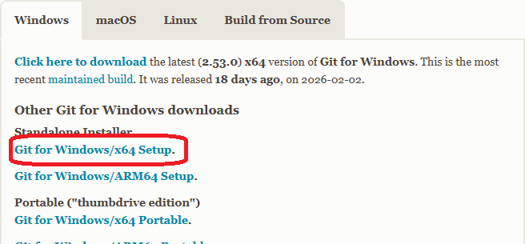
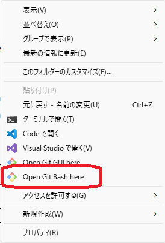
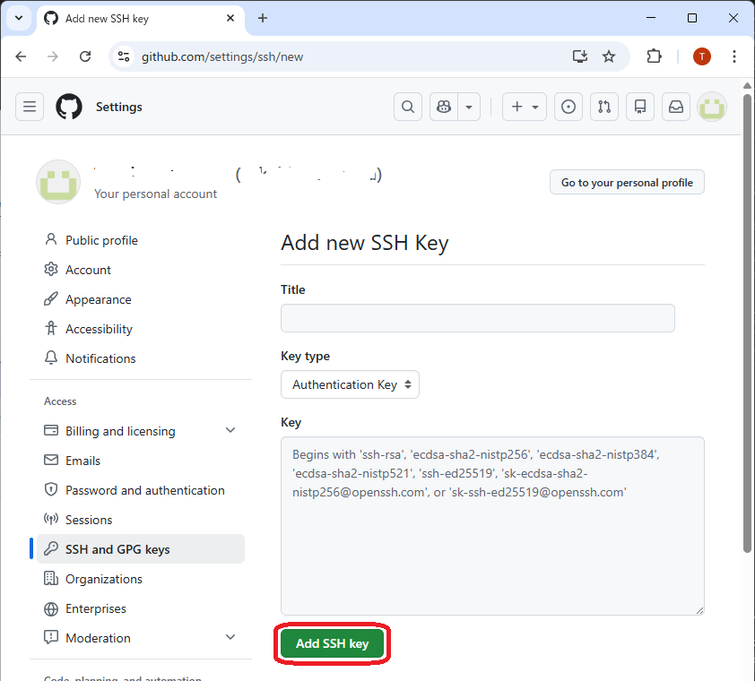
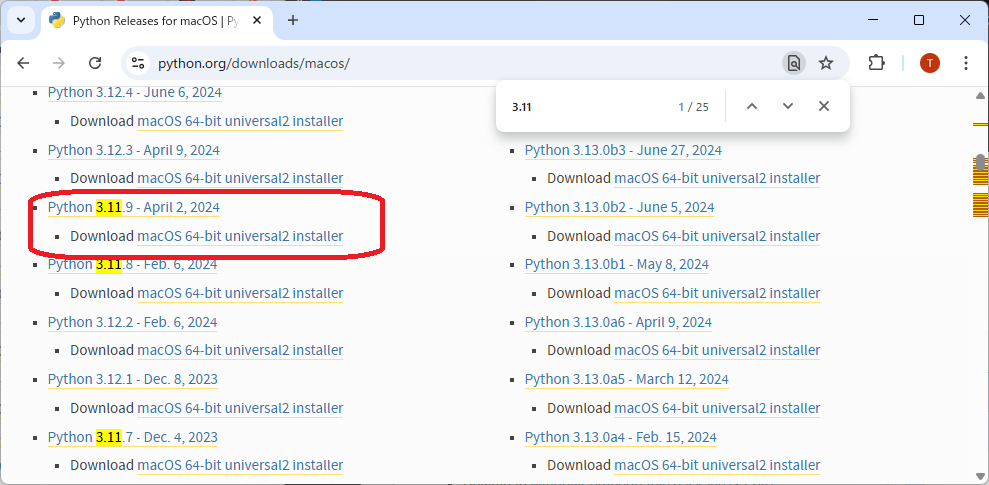
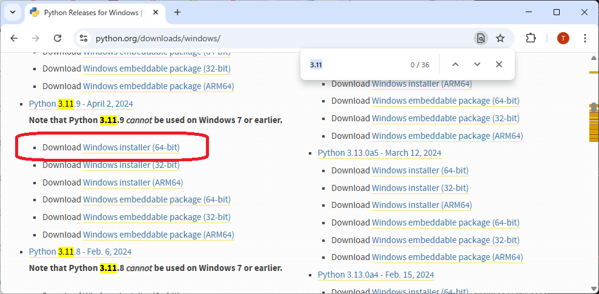

こんなサイトが 無料で 作れるようになります。
バンドの活動履歴アーカイブを公開出来ます。
の情報を入力して横断検索することが可能です。
なんだか難しそうですね。でも仕組みなんて気にしなくて良いです。
PCでDB更新 ⇒ json出力 ⇒ git add/commit/push する必要があります。
このマニュアルでは、以下の作業を順番に行います。
工程をスムーズに進めるために準備しておきます。
| アカウント名 | パスワード | 生年月日 | プロジェクト名 | ニックネーム |
|---|---|---|---|---|
| karinomeado0101 | karinop@ssw0rd | 2000/01/01 | BANDNAME | NICKNAME |
以下適宜読み替えて進めて下さい。
忘れないようにすべて同じ Google アカウントを使います。
（既にお持ちであれば省略出来ます）
0-1.のアカウント名とパスワード、生年月日を使って作成
https://accounts.google.com/signup を開く
GitHubは「公開フォルダ」みたいなものです
Google アカウントでログインします
右上の Sign in
“Continue with Google” を押す
Google アカウントを選ぶ
GitHub にログイン
次へ
Public
off
No .gitignore
No License
Quitck setup に表示されているコマンドは 8-4. 辺りで使うので
https://github.com/〇〇〇〇/BANDNAME.git ←読み替えてね
の「〇〇〇〇」は 2-1. の「GitHubのユーザー名」になります。
ちなみにですが「ギット」と読みます
xcode-select --install
setup用の.exe をダウンロード、DoubleClickしてインストール

Terminal または コマンドプロンプトにて、
git -v （← v は小文字）
バージョンが帰ってくれば正常です。
Git の設定から GitHub認証用のSSH公開鍵登録まで
ターミナル、またはコマンドプロンプトで次を入力
git config --global user.name "NICKNAME" ←読み替えてね
git config --global user.email "karinomeado0101@gmail.com" ←読み替えてね
鍵のセットを作ります。鍵と鍵穴的な
既存のSSH関連ファイルが 無い事 を確認します。
Terminal で以下のコマンドをうちます。
open ~/.ssh
エクスプローラで以下のフォルダを開きます。
%HOMEPATH%/.ssh
開いた .ssh フォルダにファイル「id_ed25519」が存在する場合は、次の 5-2-1. は 実行しない でください。
macOS の場合は Terminalで、Windowsの場合は Git bash で、
ssh-keygen -t ed25519 -C "karinomeado0101@gmail.com" ←読み替えてね
Enter を3回押してOK。
ちなみに Windows の Git bash はココから起動します

南京錠を設置するイメージ
Terminal で以下のコマンドをうちます。
open ~/.ssh
エクスプローラで以下のフォルダを開きます。
%HOMEPATH%/.ssh
そこには
２つのファイルがあります。
※ファイル「id_ed25519」が 無い場合 は 5-2-1. を実行します。さっき飛ばした場合も実行してください。
id_ed25519 は超大事なファイル。物理鍵とか印鑑とかパスワードのイメージ。
id_ed25519.pub は鍵穴とか印鑑証明書とか口座番号。こちらを GitHub に登録します。
id_ed25519.pub の中身（テキストファイルです）を
https://github.com/settings/ssh/new
の key 欄にペーストして「Add SSH Key」します。
Title はわりと何でもいいかも。判別出れば良いんじゃ無いかな？

データの更新に必要です。
互換性を考慮し 3.11 系をダウンロードしてインストールします
https://www.python.org/downloads/macos/

https://www.python.org/downloads/windows/

インストールが完了したら Terminal または コマンドプロンプトにて、
python -V （← V は大文字）
バージョンが帰ってくれば正常です。
cd
python -m venv .venv
macOSの場合
source .venv/bin/activate
Windowsの場合
.venv/scripts/activate
プロンプト前に (.venv) が付与されれば成功です。
mkdir BANDNAME ←読み替えてね
既にフォルダが存在している場合は、別のプロジェクト名としてください。 BANDNAME-DB とか
このフォルダに 配布した ZIP ファイル を展開します。
BANDNAME ←読み替えてね
│ .gitattributes （macOSでは見えないかも）
│ .gitignore （macOSでは見えないかも）
│ event_editor_tk.py ←大事なファイル
│ export_json.py ←大事なファイル
│
└─site ←大事なフォルダ
act.html
era.html
event-song.html
event.html
index.html
people.html
song.html
tour.html
venue.html
こんな感じになるはず。
BANDNAME フォルダで実行します ←読み替えてね
git init
git add .
git commit -m "first commit"
3-5. で開いたままの GitHub リポジトリ作成画面に表示されているコマンドを使う：
git remote add origin git@github.com:〇〇〇〇/BANDNAME.git ←読み替えてね
git branch -M main
git push -u origin main
これで GitHub のプロジェクトにファイルがアップロードされました。
https://github.com/〇〇〇〇/BANDNAME ←読み替えてね
Build and deployment の Branch
None → main
/(root)
で save
Your site is ready to be published at:
https://〇〇〇〇.github.io/BANDNAME/ ←読み替えてね
最初は “building…” と出て、30秒〜1分くらいで “published” に変わると公開完了。
で、実際にブラウザでサイトにアクセスできるようになるのは、、、第２章のデータ入力が終わった後に、、、
このマニュアルでは、以下の作業を順番に行います。
python 仮想環境を起動します。
cd
source .venv/bin/activate
cd
.venv/scripts/activate
プロンプト前に (.venv) が付与されれば成功です。
プロジェクトフォルダに移動して、pythonスクリプトを起動します。
cd BANDNAME ←読み替えてね
python event_editor_tk.py
GUIアプリが起動します
入力 ⇒ 更新 ⇒ アップロード
Peopleタブ
バンドメンバーを登録します
Actタブ
対バン（出演バンド）を登録します
Venueタブ
会場（ライブハウス）を登録します
Songタブ
演奏曲を登録します
Rolesタブ
役割（パート）を登録します
Eraタブ
「章」や「期」を登録します
Tourタブ
ツアー名やシリーズ名を登録します
イベントタブ の「 イベント編集 」でイベントを入力して保存します
イベント一覧に表示されるので 選択 して「 出演者 」「 対バン 」「 セトリ編集 」を入力します
入力 ⇒ 更新 ⇒ アップロード
Publish JSON をクリックすると更新データが出力されます
Web参照 をクリックするとブラウザが起動して更新を確認することが出来ます
入力 ⇒ 更新 ⇒ アップロード
BANDNAME フォルダで実行します ←読み替えてね
git add .
git commit -m "作業記録"
git push
これで GitHub のプロジェクトにファイルがアップロードされました。
この３つのコマンドは今後お世話になるので覚えてしまうと良いでしょう。
GitHub Pages が
https://〇〇〇〇.github.io/BANDNAME/ ←読み替えてね
こんな感じの表示だったら、、、実際は
https://〇〇〇〇.github.io/BANDNAME/site/ ←読み替えてね
にアクセスすることで表示されると思います。
このままでは Gitユーザー名「〇〇〇〇」や、プロジェクト名「BANDNAME」がバッチリ出ちゃってて正直気持ち悪いので、一般公開（URLアナウンス）する前に第３章も読んでね。
このマニュアルでは、以下の作業を順番に行います。
サイトを超快適・超便利にしてくれます
使わない理由が無いぐらい強力なCDN（コンテンツ配信ネットワーク）です
Google アカウントでログインします
Cloudflare で GitHub Pages を連携します
成功すればアクセスURLは
https://BANDNAME.pages.dev/ ←読み替えてね
こんな感じの URL が表示されるかと。
ブラウザ、もしくはスマホから確認します
https://〇〇〇〇.github.io/BANDNAME/site/ ←読み替えてね
でアクセス出来なくなっていることを確認します
https://BANDNAME.pages.dev/ ←読み替えてね
GitHub を Private にしてもアクセスできることを確認します
ここまででほぼ全ての設定が完了しました！
あとはただただコンテンツを充実させるためデータを入力して更新してアップロードを繰り返します